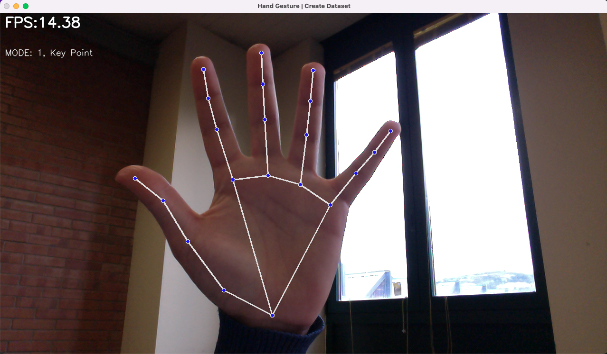
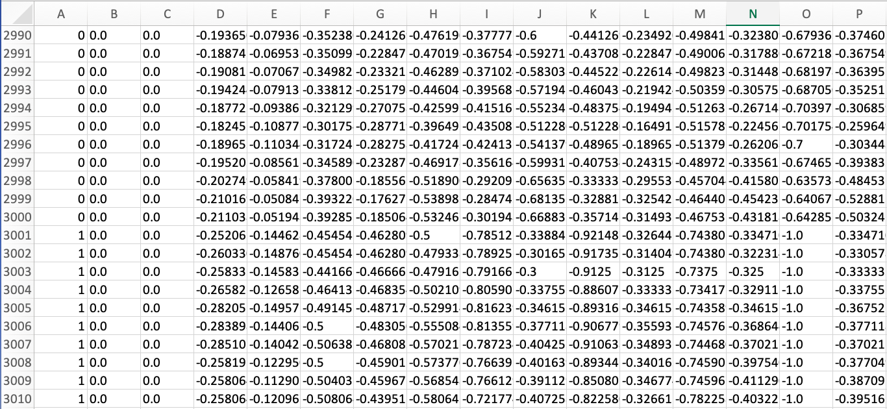
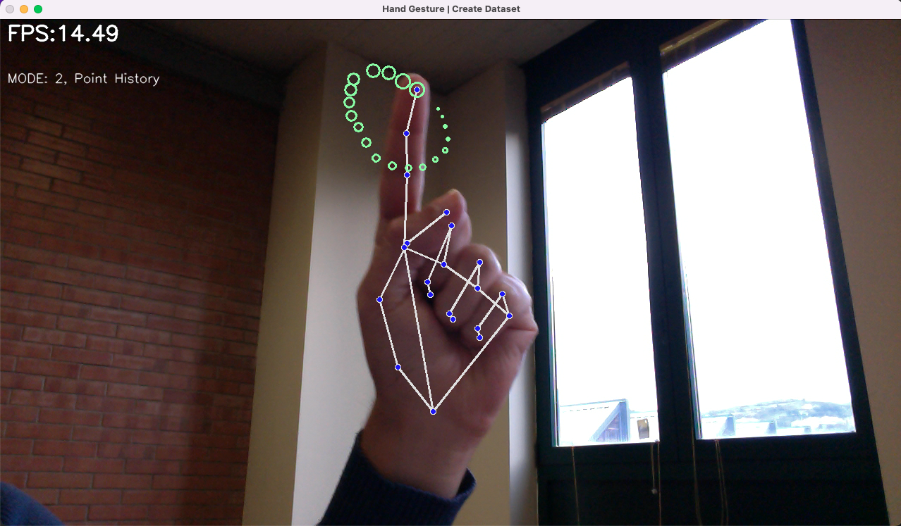
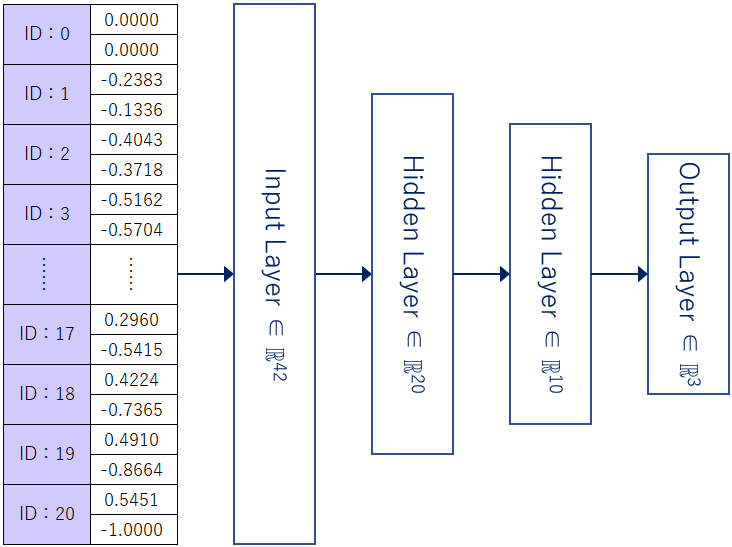
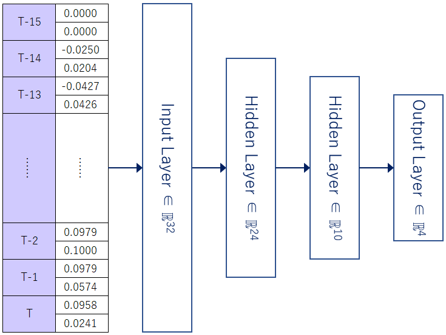

Lo strumento utilizzato per effettuare la detection della mano è Mediapipe, questa è una
soluzione di Hand Traking ad alta fedeltà. Utilizza il machine learning per dedurre 21 punti di riferimento 3D
da un singolo fotogramma.
Mediapipe utilizza una pipeline composta da più modelli che lavorano insieme:
- Un modello di rilevamento del palmo che opera sull'immagine completa e restituisce un riquadro di delimitazione della mano orientato;
- Un modello di riferimento della mano che opera sulla regione della ROI(Region of Interest) definita precedentemente dal rilevatore del palmo e
restituisce punti chiave della mano 3D ad alta fedeltà.
Dopo il rilevamento del palmo sull'intera immagine, il modello esegue una precisa localizzazione
dei punti chiave composti da 21 coordinate 3D delle nocche della mano all'interno delle ROI rilevate tramite regressione.
Il modello apprende una rappresentazione coerente della posa della mano interna ed è robusto anche per mani parzialmente
visibili.
In questa fase, la generazione del dataset ha richiesto la creazione di uno script in Python per l'estrapolazione
dei Keypoint della mano "classification_gestures.py".
In particolare questo script, effettua la detection dei Keypoint con Mediapipe ed estrapola
quest'ultimi in un file .csv che sarà usato come input per la fase di training.
 I dati estratti dai Landmarks, prima di essere inseriti nel file di dataset, vengono preprocessati nel seguente modo:
I dati estratti dai Landmarks, prima di essere inseriti nel file di dataset, vengono preprocessati nel seguente modo:
- Conversione delle coordinate relative all'ID:0 (punto di polso);
- Conversione in un array mono dimensionale;
- Normalizzazione rispetto ad un valore di massimo.
Eseguendo lo script con argomento
mode 1 si avrà il seguente:

Utilizzando i tasti numerici da "0" a "5", i Keypoints verranno aggiunti al file
"assets/dataset/keypoint.csv"
come mostrato di seguito.
Prima colonna: numero della tastiera (utilizzato come l'ID della classe), dalla seconda colonna in poi: coordinate dei Keypoints.

In questa fase, la generazione del dataset inerente alla classificazione delle hand gestures ha richiesto l'estensione dello script
,precedentemente introdotto, affinchè implementasse la classificazione del segno indice e di conseguenza, l'estrazione del singolo keypoint
dell'indice in una coda FIFO che mantiene i punti dei 20 frame precedenti.
Anche in questo caso i dati estratti dai Landmarks vengono preprocessati, prima di inserirli nel file di dataset.
Utilizzando i tasti numerici da "0" a "1", i Keypoints verranno aggiunti al file
"assets/dataset/keypoint_history.csv"
Eseguendo lo script con argomento mode 2 si avrà il seguente:

Il training della rete e di conseguenza la creazione del modello, ha richesto la creazione di un Jupiter Notebook per ciscun datatset;
neuralnetwork/hand_classificator.ipynb per quanto riguarda gli hand sign.
neuralnetwork/hand_history_classificator.ipynb per quanto riguarda le hand gesture.
Il dataset per gli hand sign è stato diviso in:
- 60% training;
- 20% test;
- 20% validation.
Il modello della rete vine creato nel seguente modo:
model = tf.keras.models.Sequential([
tf.keras.layers.Input((21 * 2, )),
tf.keras.layers.Dropout(0.2),
tf.keras.layers.Dense(20, activation='relu'),
tf.keras.layers.Dropout(0.4),
tf.keras.layers.Dense(10, activation='relu'),
tf.keras.layers.Dense(num_classes, activation='softmax'),
])

Anche il dataset per le
hand gesture è stato diviso in:
- 60% training;
- 20% test;
- 20% validation.
Il modello della rete vine creato nel seguente modo:
model = tf.keras.models.Sequential([
tf.keras.layers.InputLayer(input_shape=(TIME_STEPS * DIMENSION, )),
tf.keras.layers.Dropout(0.2),
tf.keras.layers.Dense(24, activation='relu'),
tf.keras.layers.Dropout(0.5),
tf.keras.layers.Dense(10, activation='relu'),
tf.keras.layers.Dense(NUM_CLASSES, activation='softmax')
])
